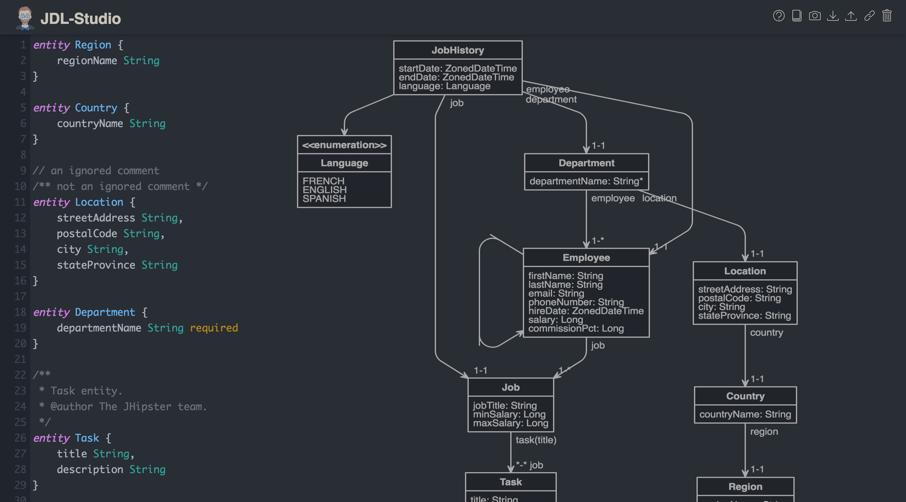

How to be Hip and a Java developer
Turbut Alin
Contents
What it means to be hip in software development?
Using the latest software techniques and newest Javascript framework.
What features do we need?
- Responsiveness
- Security
- Social Login
- Distributed Cache
- Search
- Production optimizations
- SQL DB with versioning
- Automated Tests
- Performance Tests
- Metrics
- User Management
- Audits & Log
- Internationalization
Why do people think Java sucks?
XML Configuration
Getters-Setters Hell
public class Human {
private Arm leftArm;
private Arm rightArm;
private Leg leftLeg;
private Leg rightLeg;
private Head head;
private Body body;
private Hair hair;
public Arm getLeftArm() {
return leftArm;
}
public void setLeftArm(Arm leftArm) {
this.leftArm = leftArm;
}
public Arm getRightArm() {
return rightArm;
}
public void setRightArm(Arm rightArm) {
this.rightArm = rightArm;
}
public Leg getLeftLeg() {
return leftLeg;
}
public void setLeftLeg(Leg leftLeg) {
this.leftLeg = leftLeg;
}
public Leg getRightLeg() {
return rightLeg;
}
public void setRightLeg(Leg rightLeg) {
this.rightLeg = rightLeg;
}
public Head getHead() {
return head;
}
public void setHead(Head head) {
this.head = head;
}
public Body getBody() {
return body;
}
public void setBody(Body body) {
this.body = body;
}
public Hair getHair() {
return hair;
}
public void setHair(Hair hair) {
this.hair = hair;
}
}
Old Java architecture:
- Enterprise Java Beans
- Java EE
- Java 4,5
- Swing or JavaFX
- Servlets
Disclaimer: These are all purely subjective.
Hello, JHipster
What is JHipster?
Modern Web Application scaffolding tool
Open Source project
Server side and client side
Full infrastructure
JHipster technology stack
So what exactly is JHipster?
JHipster is a
Yeoman generator,
used to create a
Spring Boot + AngularJS
application.
Client side technologies
-
 HTML5
HTML5
- Bootstrap, CSS3
- AngularJS
-
 Sass
Sass
- JQuery
- Browser Sync
- Bower
- Grunt
Server side technologies
-
 Spring-Boot
Spring-Boot
- Gradle
-
 Spring Stack
Spring Stack
-
 Docker
Docker
-
 MySQL
MySQL
-
 MongoDB
MongoDB
- ELK
-
 Netflix OSS
Netflix OSS
And because of all the possible combinations, other technologies as well.
What does JHipster bring to the table?
Let's dive deeper into JHipster features before getting our hands "dirty"
JHipster brings a simple way of generating a full webapp project in a matter of minutes.
yo jhipster...and after deiciding on the technologies, you have a working webapp locally.
JDL
JHipster Domain Language helps you generate the domain entites of the webapp.
http://www.jhipster.tech/jdl/
JDL Studio
JHipster UML
http://www.jhipster.tech/jhipster-uml/
www.jhipster.tech for more
JHipster Monolith Demo
Prerequisites
-
Java
http://www.oracle.com/technetwork/java/javase/downloads/index.html -
Node
https://nodejs.org/en/ -
Yarn
https://yarnpkg.com/en/docs/install -
Yeoman
yarn global add yo
JHipster Microservices Scaffolding
Say Microservices one more time
I dare you!
JHipster Microservices Demo
Thank you for your attention!